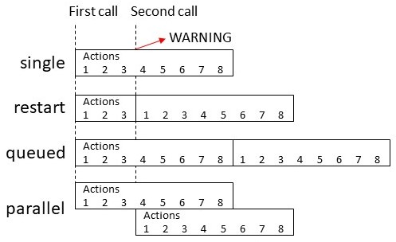

Automation YAML
Automations are created in Home Assistant via the UI, but are stored in a YAMLYAML is a human-readable data serialization language. It is used to store and transmit data in a structured format. In Home Assistant, YAML is used for configuration, for example in the configuration.yaml or automations.yaml files. [Learn more] format. If you want to edit the YAMLYAML is a human-readable data serialization language. It is used to store and transmit data in a structured format. In Home Assistant, YAML is used for configuration, for example in the configuration.yaml or automations.yaml files. [Learn more] of an automationAutomations in Home Assistant allow you to automatically respond to things that happen in and around your home. [Learn more], select the automation, select the menu button in the top right then on Edit in YAML.
The UI will write your automations to automations.yaml. This file is managed by the UI and should not be edited manually.
It is also possible to write your automations directly inside configuration.yamlThe configuration.yaml file is the main configuration file for Home Assistant. It lists the integrations to be loaded and their specific configurations. In some cases, the configuration needs to be edited manually directly in the configuration.yaml file. Most integrations can be configured in the UI. [Learn more] or other YAMLYAML is a human-readable data serialization language. It is used to store and transmit data in a structured format. In Home Assistant, YAML is used for configuration, for example in the configuration.yaml or automations.yaml files. [Learn more] files. You can do this by adding a labeled automation block to your configuration.yaml:
# The configuration required for the UI to work
automation: !include automations.yaml
# Labeled automation block
automation kitchen:
- triggers:
- trigger: ...
You can add as many labeled automation blocks as you want.
Configuration Variables
A unique id for your automation, will allow you to make changes to the name and entity_id in the UI, and will enable debug traces.
Used to define the state of your automation at startup. When not set, the state will be restored from the last run. See Automation initial state.
Configuration values for the traces stored, currently only stored_traces can be configured.
The number of traces which will be stored. See Number of debug traces stored.
Variables that will be available inside your templates, both in conditions and actions.
Variables that will be available inside your templates triggers.
The value of the variable. Any YAML is valid. Only limited templates can be used.
Controls what happens when the automation is invoked while it is still running from one or more previous invocations. See Automation modes.
Controls maximum number of runs executing and/or queued up to run at a time. Only valid with modes queued and parallel.
When max is exceeded (which is effectively 1 for single mode) a log message will be emitted to indicate this has happened. This option controls the severity level of that log message. See Log Levels for a list of valid options. Or silent may be specified to suppress the message from being emitted.
The trigger(s) which will start the automation. Multiple triggers can be added and the automation will start when any of these triggers trigger.
An ID that can be used in the automation to determine which trigger caused the automation to start.
Conditions that have to be true to start the automation. By default all conditions listed have to be true, you can use logical conditions to change this default behavior.
Automation modes
| Mode | Description |
|---|---|
single |
Do not start a new run. Issue a warning. |
restart |
Start a new run after first stopping previous run. |
queued |
Start a new run after all previous runs complete. Runs are guaranteed to execute in the order they were queued. |
parallel |
Start a new, independent run in parallel with previous runs. |

YAML example
Example of a YAMLYAML is a human-readable data serialization language. It is used to store and transmit data in a structured format. In Home Assistant, YAML is used for configuration, for example in the configuration.yaml or automations.yaml files. [Learn more] based automation that you can add to configuration.yamlThe configuration.yaml file is the main configuration file for Home Assistant. It lists the integrations to be loaded and their specific configurations. In some cases, the configuration needs to be edited manually directly in the configuration.yaml file. Most integrations can be configured in the UI. [Learn more].
# Example of entry in configuration.yaml
automation my_lights:
# Turns on lights 1 hour before sunset if people are home
# and if people get home between 16:00-23:00
- alias: "Rule 1 Light on in the evening"
triggers:
# Prefix the first line of each trigger configuration
# with a '-' to enter multiple
- trigger: sun
event: sunset
offset: "-01:00:00"
- trigger: state
entity_id: all
to: "home"
conditions:
# Prefix the first line of each condition configuration
# with a '-'' to enter multiple
- condition: state
entity_id: all
state: "home"
- condition: time
after: "16:00:00"
before: "23:00:00"
actions:
# With a single action entry, we don't need a '-' before action - though you can if you want to
- action: homeassistant.turn_on
target:
entity_id: group.living_room
# Turn off lights when everybody leaves the house
- alias: "Rule 2 - Away Mode"
triggers:
- trigger: state
entity_id: all
to: "not_home"
actions:
- action: light.turn_off
target:
entity_id: all
# Notify when Paulus leaves the house in the evening
- alias: "Leave Home notification"
triggers:
- trigger: zone
event: leave
zone: zone.home
entity_id: device_tracker.paulus
conditions:
- condition: time
after: "20:00"
actions:
- action: notify.notify
data:
message: "Paulus left the house"
# Send a notification via Pushover with the event of a Xiaomi cube. Custom event from the Xiaomi integration.
- alias: "Xiaomi Cube Action"
initial_state: false
triggers:
- trigger: event
event_type: cube_action
event_data:
entity_id: binary_sensor.cube_158d000103a3de
actions:
- action: notify.pushover
data:
title: "Cube event detected"
message: "Cube has triggered this event: {{ trigger.event }}"
Extra options
When writing automations directly in YAMLYAML is a human-readable data serialization language. It is used to store and transmit data in a structured format. In Home Assistant, YAML is used for configuration, for example in the configuration.yaml or automations.yaml files. [Learn more], you will have access to advanced options that are not available in the user interface.
Automation initial state
At startup, automations by default restore their last state of when Home Assistant ran. This can be controlled with the initial_state option. Set it to false or true to force initial state to be off or on.
automation:
- alias: "Automation Name"
initial_state: false
triggers:
- trigger: ...
Number of debug traces stored
When using YAMLYAML is a human-readable data serialization language. It is used to store and transmit data in a structured format. In Home Assistant, YAML is used for configuration, for example in the configuration.yaml or automations.yaml files. [Learn more] you can configure the number of debugging traces stored for an automation. This is controlled with the stored_traces option under trace. Set stored_traces to the number of traces you wish to store for the particular automation. If not specified the default value of 5 will be used.
automation:
- alias: "Automation Name"
trace:
stored_traces: 10
triggers:
- trigger: ...
Migrating your YAML automations to automations.yaml
If you want to migrate your manual automations to use the editor, you’ll have to copy them to automations.yaml. Make sure that automations.yaml remains a list! For each automation that you copy over, you’ll have to add an id. This can be any string as long as it’s unique.
# Example automations.yaml entry. Note, automations.yaml is always a list!
- id: my_unique_id # <-- Required for editor to work, for automations created with the editor the id will be automatically generated.
alias: "Hello world"
triggers:
- trigger: state
entity_id: sun.sun
from: below_horizon
to: above_horizon
conditions:
- condition: numeric_state
entity_id: sensor.temperature
above: 17
below: 25
value_template: "{{ float(state.state) + 2 }}"
actions:
- action: light.turn_on
Deleting automations
When automations remain visible in the Home Assistant dashboard, even after having deleted in the YAMLYAML is a human-readable data serialization language. It is used to store and transmit data in a structured format. In Home Assistant, YAML is used for configuration, for example in the configuration.yaml or automations.yaml files. [Learn more] file, you have to delete them in the UI.
To delete them completely, go to UI Settings > Devices & services > Entities and find the automation in the search field or by scrolling down.
Check the square box aside of the automation you wish to delete and from the top-right of your screen, select ‘REMOVE SELECTED’.